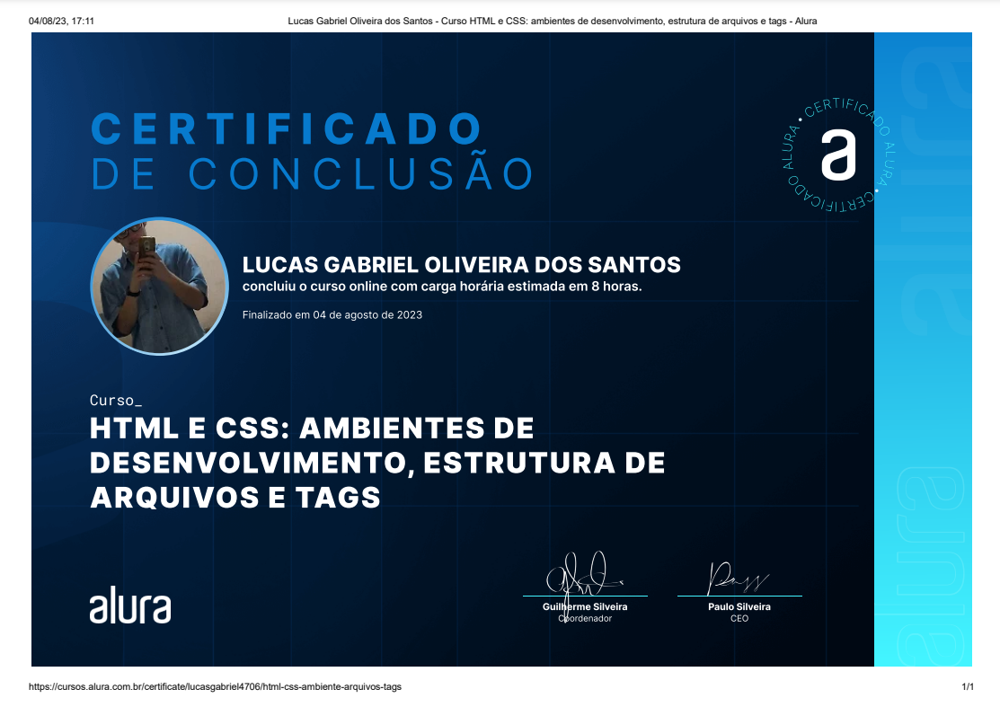
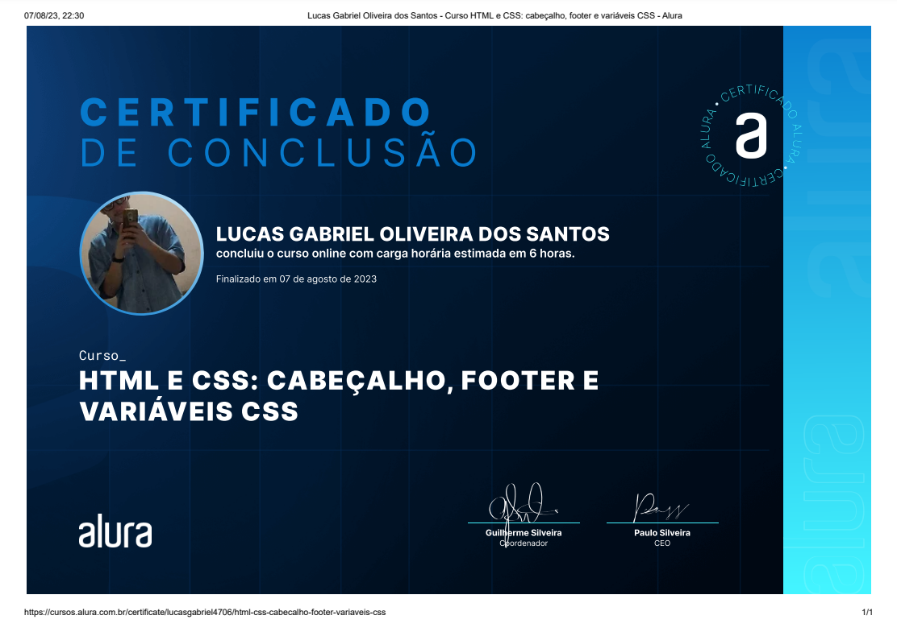
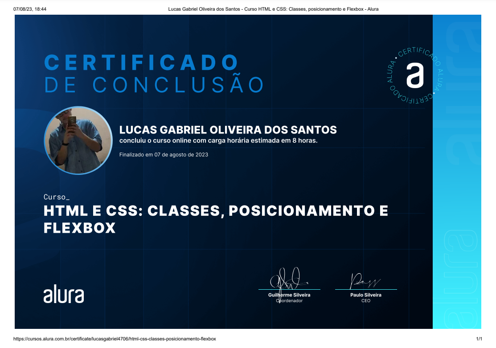
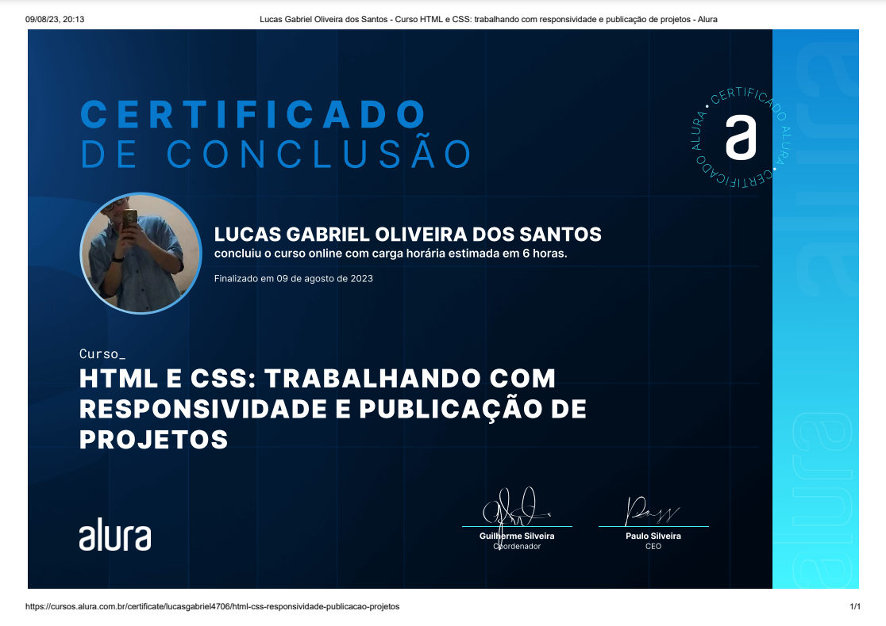
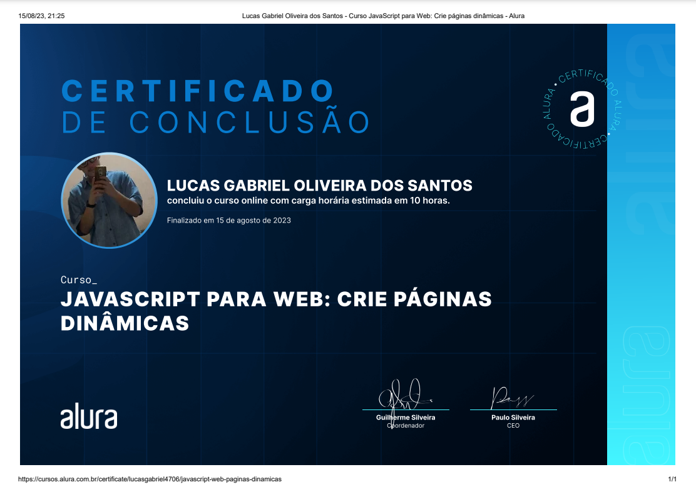
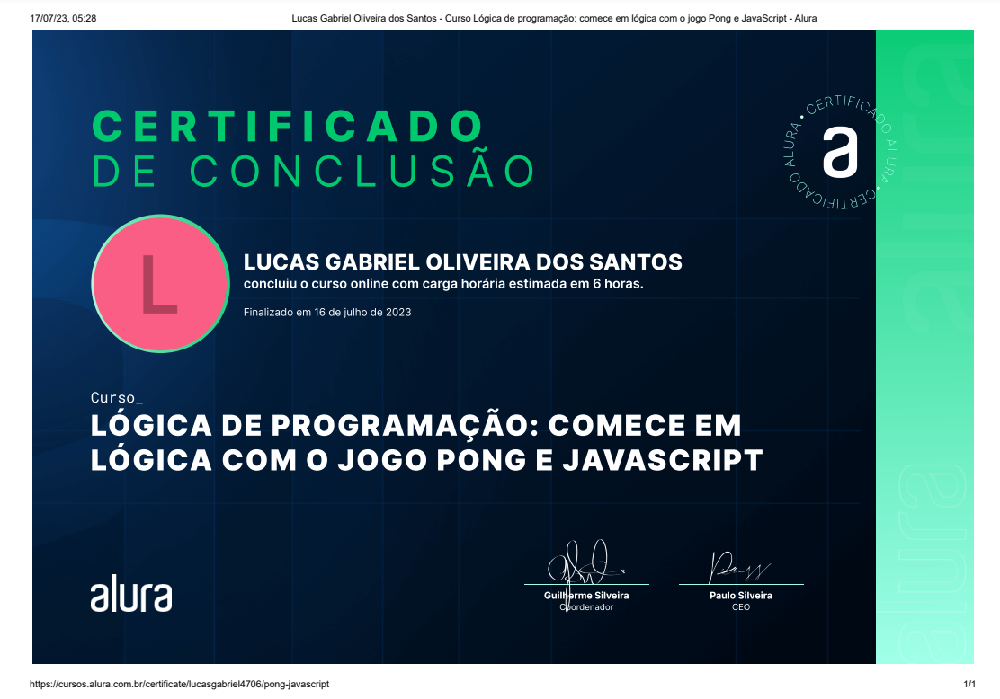
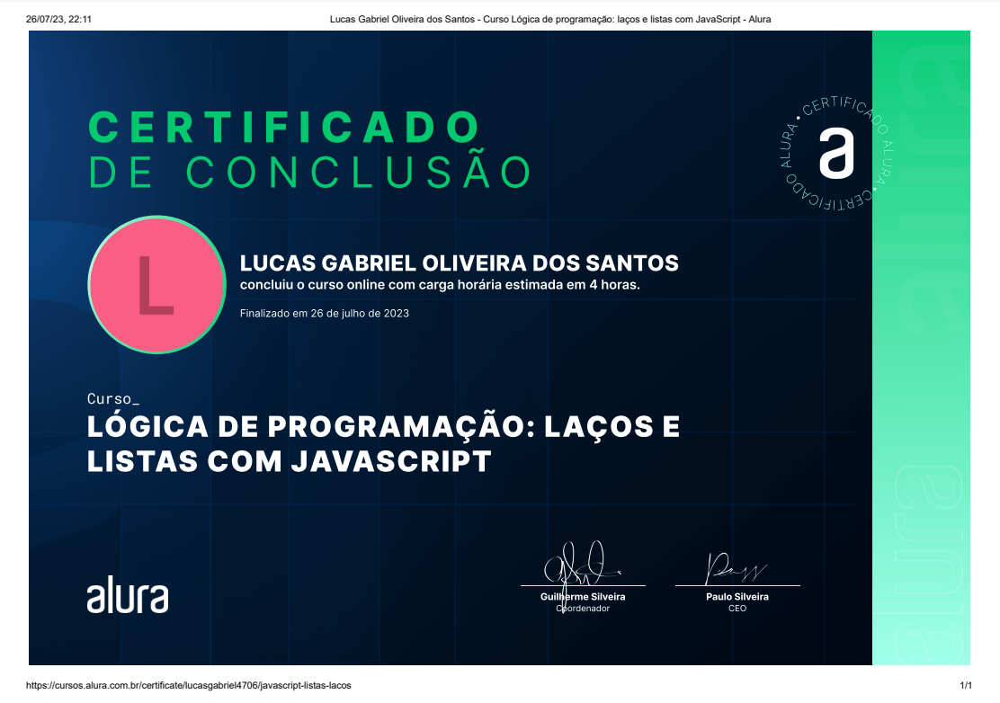

Meus Projetos

Calculadora de Payback (V1)

LsFlix
Calculadora de recarga

Identificador de produtos

Conexão Brasil
Sou um profissional em transição de carreira, com experiência de 4 anos e meio no comércio, onde
desenvolvi habilidades como atendimento ao cliente, resolução de problemas e trabalho em equipe. Movido
pelo interesse em tecnologia, mergulhei no universo da programação e iniciei minha jornada na área.
Atualmente, atuo como Suporte de TI Jr., tendo iniciado como estagiário de suporte na AR70/Teison
Brasil, onde fui efetivado em apenas seis meses. Durante esse período, desenvolvi diversas aplicações,
contribuindo ativamente para a melhoria dos processos internos e aprimorando minhas habilidades em
desenvolvimento web.
Agora, busco uma nova oportunidade como estagiário em Front-End Development, onde possa continuar minha
evolução, ganhar experiência prática na área e agregar valor por meio de código limpo, interfaces
intuitivas e soluções inovadoras.
Função:
Descrição:
Skills desbloqueadas:
Calculadora de Payback (V1)
LsFlix
Calculadora de recarga
Identificador de produtos
Conexão Brasil
Repositório, commit e versões

Ambientes de desenvolvimento, estrutura de arquivos e tags
Footer e variáveis CSS
Classes, posicionamentos e Flexbox
Trabalhando com responsividade e publicação de projetos
Crie páginas dinâmicas
Comece em lógica com o jogo pong e javascript
Laços e Listas com javascript
Desenvolvimento dinâmico, Desenvolvimento Frontend e Experiência do usuário

Design de software, Estrutura de Dados para sistemas inteligentes e Programação I

Empreendedorismo e criação de novos negócios e Lógica de programação

Desenvolvimento de aplicações de banco de dados e Prática integradora de tecnologias disruptivas